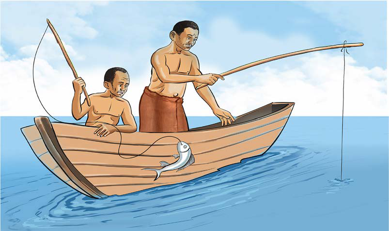

Andika mambo uliyojifunza kuhusu sayansi na teknolojia ya ufugaji na jinsi ya kuyaendeleza kwa sasa.
Sayansi na teknolojia za asili katika uvuvi
Sayansi na teknolojia asilia katika uvuvi ilitumia vifaa kama vile ndoano, ngalawa, mitumbwi na mitego ya asili. Ndoano hizo zilitengenezwa na jamii za wahunzi kwa kutumia chuma. Wavuvi waliweka chambo mbalimbali katika ndoano ili kuvutia samaki kwa lengo la kuwatega. Wavuvi waliweza kuwavua samaki pindi walipokula chambo kwenye ndoano. Kielelezo namba 12, kinawasilisha uvuvi kwa kutumia ndoano.

Kielelezo namba 12: Uvuvi kwa kutumia ndoano
Pia, uvuvi ulifanyika kwa kutumia nyavu za asili zilizosukwa. Wavuvi walitupa nyavu katika kina kirefu cha maji mengi ili kuvua samaki. Samaki walipopita katika eneo walilotupa nyavu walinaswa. Matumizi ya ngalawa na mitumbwi yalisaidia wavuvi